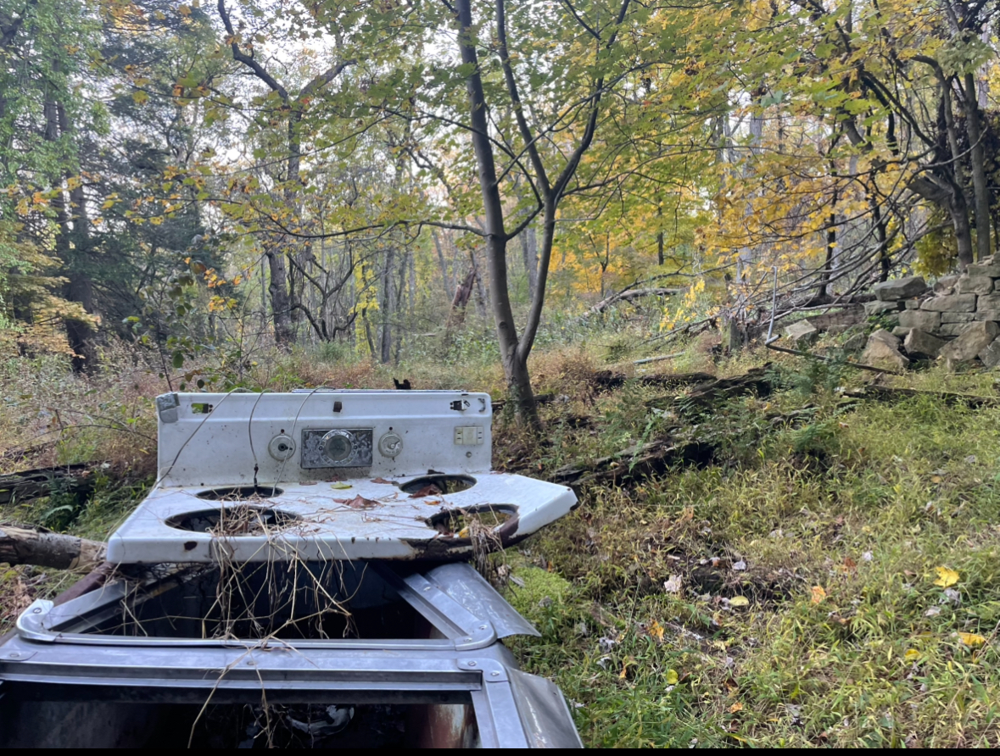
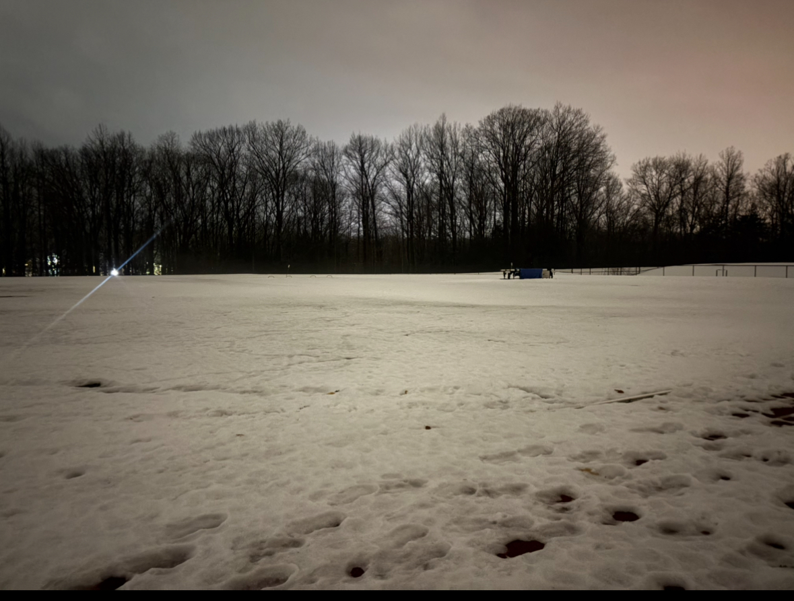

Hi, my name is Knox! This is my first ever website.
Fun facts about me
I like to read
My favorite genres are fantasy, horror, historical fiction, and graphic novels/manga.
My favorite book is Aristotle and Dante Discover the Secret of the Universe
I like to watch movies
My favorite movie is Dead Poet's Society
I can speak some French
I have been taking french for quite a few years now.
I still am not confident enough to consider myself fluent, though.
I play the violin
I have been playing the violin for ten years now (which is insane for me to think about)
I love hiking
Some some pictures I've taken while hiking:
A picture of some geese I took (they hissed at me right after this picture was taken)

I found this old stove in the middle of the woods. I still don't know why it's there.

Reflection on making my site
Utilizing word press and html both require similar and different skill sets.
With html, you are effectively learning a new language.
A language that computers can read. Just like any language you have to learn sentence structure, grammar,
the meaning of certain phrases, all so the language can make sense to people who are fluent in it, which is both humans and machines.
Html has a lot of advantages. The code is all yours, there is no gray area when it comes to that.
It is also a good skill to know in this ever-growing digital age.
I personally am not a fan of Word Press.
I guess for me, I took a class like this to learn how not to be reliant on platforms like Word Press.
If I wanted to make a website without actually knowing how to make it from scratch, I would have just used Word Press.
That’s what it’s good for, people who do not want to get into the nitty gritty of web making but still want to make a website.
I am not trying to say people who do that are bad, there are a lot of reasons why someone can’t or does not want to do that.
I am simply saying that Word Press is good for people that meet those requirements.
Word press has an odd layout that can be difficult to navigate. Trying to just figure out how to modify things can be painful, because it’s not all in one spot.
You usually have to go through three different menus just to adjust the color of your site.
It was just in general sort of frustrating to try and work with after spending a good month and a half learning html
and making a true cohesive website from scratch. Html is much more difficult to get used to
and to understand, but the work you put into it reaps more benefits compared to Word Press in my opinion.
With html, I hope to learn how to make an even more professional looking website.
I think it would be cool to add unique graphics and stuff like music to my site, and I look forward to learning those sorts of things.
My site using htmlMy site via Word Press